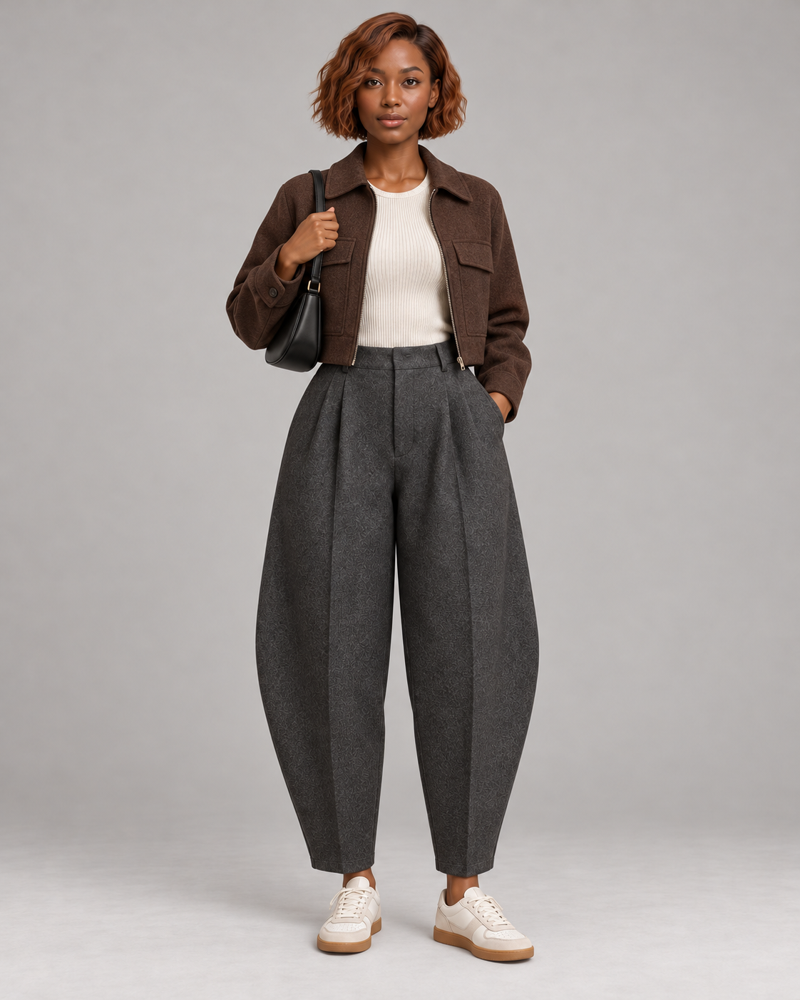
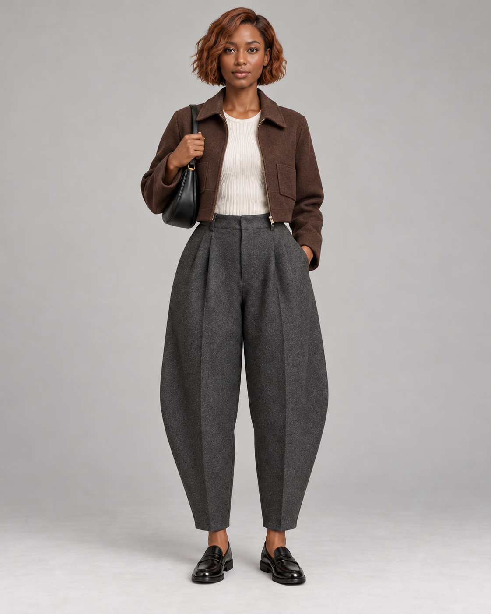
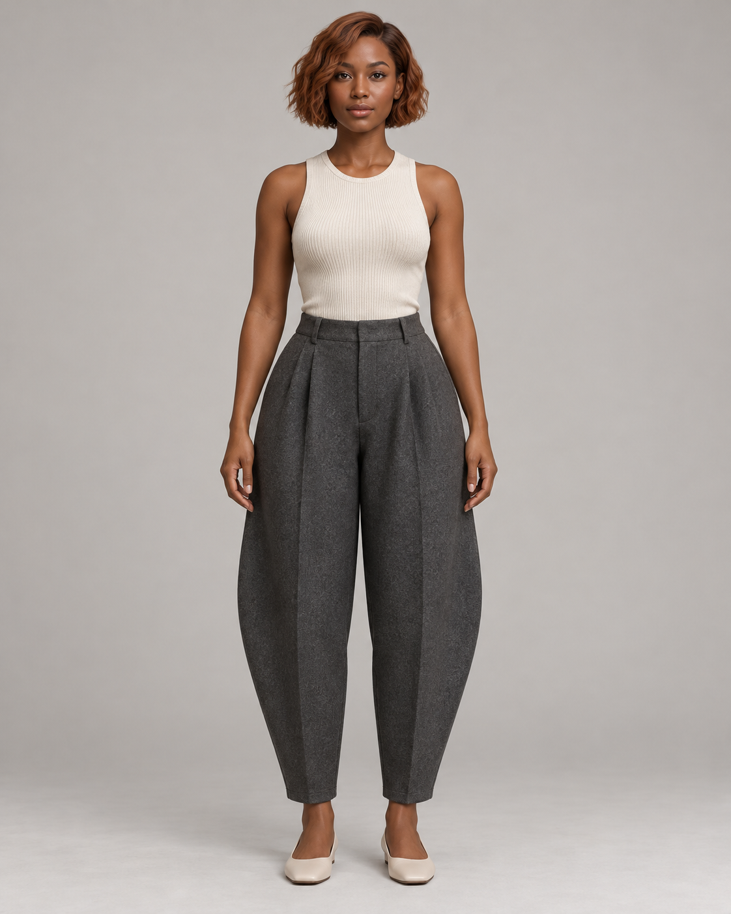
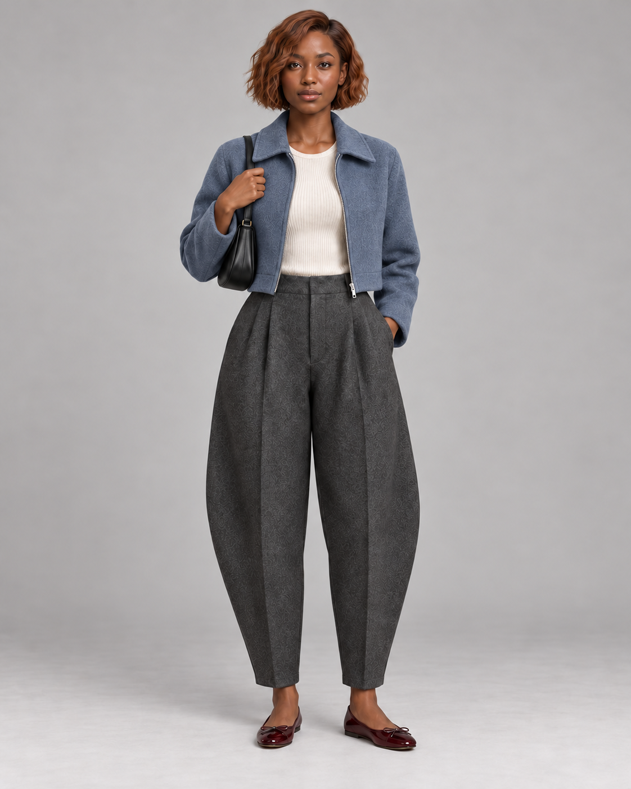

点点看了图片 这是一套以灰色气球裤为主的穿搭。你可能想试试： ◇改成通勤风生成适合上班的版本 ◎看看适不适合我用我的试穿形象判断 ▣围绕这条裤子搭保留裤子，重新搭整套 ⌕找相似穿搭查看相关社区笔记 相似穿搭来自小红书社区 气球裤＋运动鞋 气球裤＋乐福鞋 气球裤＋芭蕾鞋
点点 可以。要判断这套穿在你身上的比例，我需要一张你的正面全身形象。  REDshop 已保存使用我的试穿形象正面全身形象 › ＋换一张全身照 形象由你选择，仅用于本次穿搭判断。
点点 我先按这套的主要特征找： 灰色气球裤短款外套棕灰配色 整体最像 更像裤型 更像配色 更像外套 找到 12 篇 气球裤的轻松通勤穿法@南方衣橱 · 8,214 赞整体相似 短外套怎么搭气球裤@一天三套 · 3,706 赞裤型相似 低饱和棕灰配色参考@灰调日记 · 6,118 赞配色相似 短夹克的三个日常版本@今天穿什么 · 2,943 赞外套相似 再看 4 篇